Designing land that grows toward abundance.讓土地朝向豐饒生長的設計。
Studio Syntropy integrates natural ecosystem processes into farms and designed landscapes. We plan with succession, strata and soil life, so that land builds its own fertility over time.趨合工作室將自然生態系統的運作融入農場與景觀設計。我們以演替、層次與土壤生命為依據進行規劃，讓土地隨時間建立自身的肥力。
Chili peppers in a syntropic tree line at Gengfutian Farm, Hualien. No irrigation since March, no fertiliser, no sprays.花蓮耕福田農場趨合樹列中的辣椒：自三月起未灌溉、未施肥、未噴藥。October 20262026 年 10 月
Blog部落格
Notes from the field田野筆記
Projects, soil results, courses and what grows, written once a month or when something special happens.專案進度、土壤結果、課程與生長中的一切，每月更新，或在特別的時刻發佈。
Only you see this button. Drafts stay hidden until you publish them.只有您看得到此按鈕。草稿在發佈前不會公開。
Results of the 2025–2026 chili trial with the World Vegetable Center: harvest, soil carbon and soil life compared with a monoculture control.與世界蔬菜中心合作的 2025–2026 辣椒試驗結果：收成、土壤碳與土壤生命，與單一栽培對照區比較。
Design courses and tree line plans with Noble Gateway and Kira Organic Farm, 2025–2026.2025–2026 年與 Noble Gateway 及 Kira 有機農場合作的設計課程與樹列規劃。
Gengfutian Farm · 2024–2026耕福田農場 · 2024–2026
From rock to food forest從礫石地到食物森林
Eighteen months on stony ground, in five steps. Scroll at your own pace.一塊礫石地上的十八個月，分為五個步驟。請依自己的步調往下閱讀。
Gengfutian Farm, Tzu Chi University, Hualien.花蓮慈濟大學耕福田農場。
November 20242024 年 11 月
Gravel and an old orchard礫石地與老果園
A ten-year-old soursop orchard on shallow, stony, calcareous ground. The first log lines are laid out on bare gravel.一座十年的刺果番荔枝果園，位於淺薄、多石的石灰質土地上。第一批原木線鋪在裸露的礫石上。
1.8 %organic matter in the topsoil表土有機質
Soil test, December 2024土壤檢測，2024 年 12 月
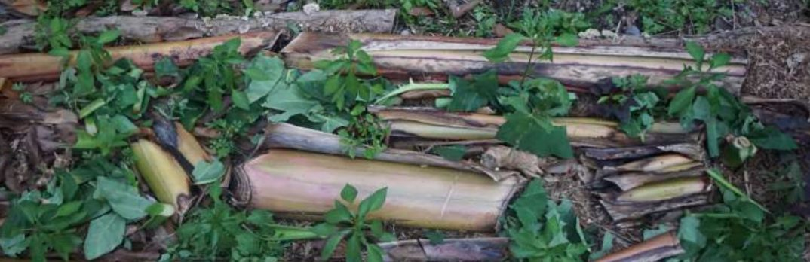
A syntropic bed covered with pruned biomass.覆蓋修剪生物量的趨合植床。
September 20252025 年 9 月
Soil builds under the tree lines樹列下的土壤開始累積
Pruned biomass, wood chips and banana trunks are laid along the tree lines. The soil beneath them changes first; the open inter-rows follow later.修剪下的生物量、木屑與香蕉莖沿著樹列鋪放。樹列下方的土壤最先改變，行間空地隨後跟進。
15.1 %organic matter in the tree lines, against 1.9 % in the monoculture control樹列有機質，單一栽培對照區為 1.9 %
HDARES soil report S1140692花蓮農改場土壤報告 S1140692
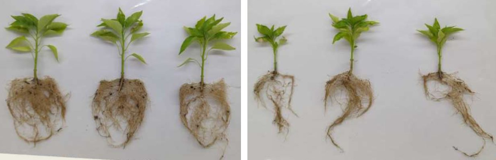
Greenhouse test at WorldVeg, April 2026.世界蔬菜中心溫室試驗，2026 年 4 月。
March–April 20262026 年 3–4 月
Chili planted, then no more water種下辣椒，之後不再灌溉
Chili seedlings go into syntropic beds and into a monoculture control. After 21 March the syntropic plots receive no irrigation, no fertiliser and no sprays. In the greenhouse, WorldVeg tests the soil against Fusarium wilt.辣椒苗種入趨合植床與單一栽培對照區。3 月 21 日之後，趨合試驗區不再灌溉、施肥或噴藥。世界蔬菜中心同時在溫室中測試土壤對鐮孢菌萎凋病的抵抗力。
0plants wilted in syntropic soil inoculated with Fusarium株在接種鐮孢菌的趨合土壤中萎凋
World Vegetable Center seminar, 16 April 2026世界蔬菜中心研討會，2026 年 4 月 16 日
⇆2024.112026.05
Same view, November 2024 and May 2026. Drag the line or use the arrow keys.同一視角，2024 年 11 月與 2026 年 5 月。拖曳分隔線或使用方向鍵。
May 20262026 年 5 月
A closed food forest成林的食物森林
Eighteen months after the first logs, the same view shows a dense, layered food forest. Below ground, the soil has become fungal-dominated, as in a forest.鋪下第一批原木十八個月後，同一視角已是茂密、分層的食物森林。地表之下，土壤轉為以真菌為主，就像森林一樣。
7.7×microbial biomass compared with the monoculture: 1,637 against 213 µg/g單一栽培的微生物量倍數：1,637 對 213 µg/g
World Vegetable Center soil analysis, 2026世界蔬菜中心土壤分析，2026 年
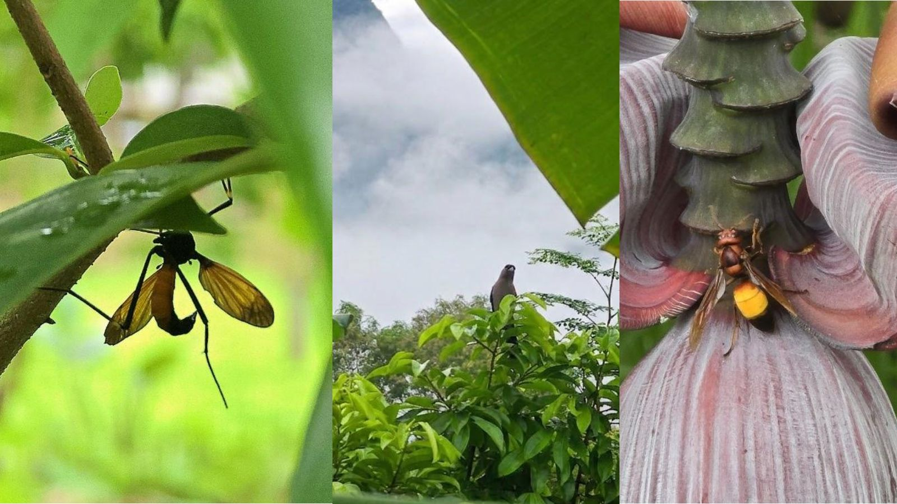
Pollinators and birds at Gengfutian.耕福田的授粉者與鳥類。
July–October 20262026 年 7–10 月
Harvest, and life returns收成，生命回歸
The syntropic plots keep fruiting into October, after the control has stopped. Spiders, bees and grasshoppers live among the plants; the control had one spider.趨合試驗區持續結果至十月，對照區早已停止。植物間可見蜘蛛、蜜蜂與蚱蜢；對照區僅見一隻蜘蛛。
5.3×more chili than the monoculture control: 3.14 kg against 0.60 kg對照區的辣椒收成倍數：3.14 公斤對 0.60 公斤
Lasting growth above ground starts beneath the surface. Healthy micro-ecosystems give resilience and natural water retention.地面上的長久生長始於地表之下。健康的微生態系統帶來韌性，並自然保持水分。
Succession in time時間上的演替
Short-lived pioneers prepare the ground for longer-lived species. Each life cycle hands over to the next, and pruning keeps the system young and productive.短命的先驅植物為長壽的物種預備土地。每個生命週期接續下一個，修剪則讓系統保持年輕與生產力。
Strata in space空間上的分層
Every plant has a place in the light: emergent, high, medium or low. Filling all strata at high density uses the sunlight completely and builds biomass fast.每株植物在光中都有自己的位置：突出層、高層、中層或低層。高密度地填滿各層，能完整利用陽光並快速累積生物量。
Strata and succession together: one consortium分層與演替結合：一個植物聯盟
Each cell is one niche, defined by height (stratum) and life span (stage). Plants in the same cell compete; plants in different cells cooperate. Example for the lowlands of eastern Taiwan.每一格是一個生態位，由高度（層次）與壽命（演替階段）決定。同一格的植物彼此競爭，不同格的植物彼此合作。以下為台灣東部平地的範例。
Example consortium by stratum and successional stage 依層次與演替階段排列的植物聯盟範例
Stratum · cover層次 · 覆蓋度
Placenta 1胎盤期一0–6 months個月
Placenta 2胎盤期二6–24 months個月
Secondary 1次生期一2–5 years年
Secondary 2次生期二5–21 years年
Climax頂極期21+ years年
Emergent突出層~20%
Corn玉米
Papaya木瓜
Moringa辣木
Taiwan acacia相思樹
Coconut椰子
High高層~40%
Tomato番茄
Cassava樹薯
Banana香蕉
Fig無花果
Mango, avocado芒果、酪梨
Medium中層~60%
Jack bean刀豆
Lemongrass香茅
Pigeon pea樹豆
Guava, citrus芭樂、柑橘
Indigenous cinnamon土肉桂
Low低層~80%
Sweet potato地瓜
Ginger, taro薑、芋頭
Pineapple鳳梨
Coffee咖啡
Cocoa可可
Cover: the share of ground each stratum shades when the system is mature.覆蓋度：系統成熟時，各層所遮蔽的地面比例。
Selected projects精選案例
Before and after轉變前後
Drag the line on a photo, or focus it and use the arrow keys, to compare the site before and after the work.拖曳照片上的分隔線，或以鍵盤方向鍵操作，比較施作前後的樣貌。
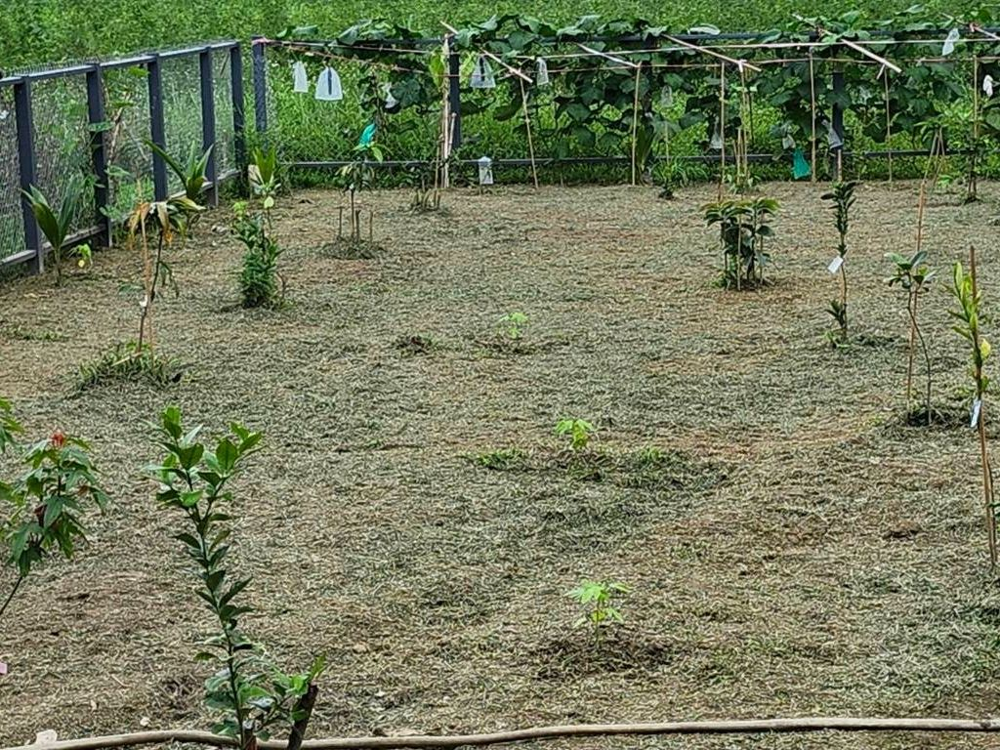
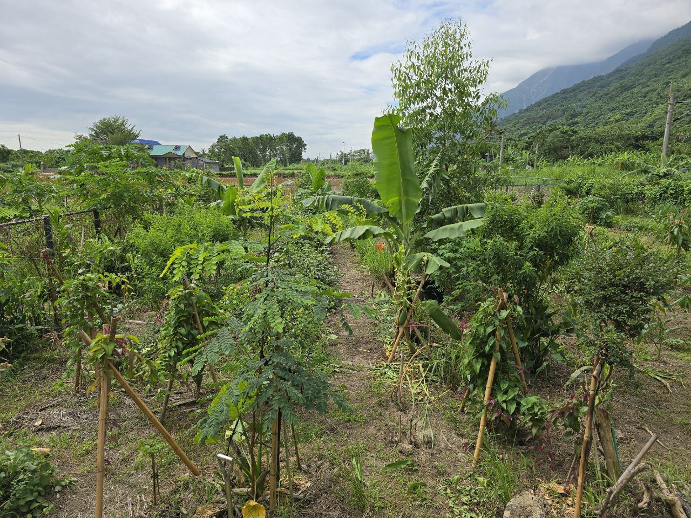
⇆2024.052024.12
Indigenous heritage原民傳承
Ching Mei's Food Forest清美農場食物森林
The landowner had planted tropical and subtropical fruit trees on unused grassland without success. From June 2024 the site was converted into a high-diversity, high-density syntropic food forest. Annual crops filled the early phases; berries and fruit trees are now producing.地主原先在閒置草地上種植熱帶與亞熱帶果樹，但成效不佳。自 2024 年 6 月起，此地轉型為高多樣性、高密度的趨合食物森林。初期以一年生作物為主，如今漿果與果樹已開始結果。
Indigenous Crop Department plot, Ji'an, 2026.吉安原住民作物示範區，2026 年。
Public research & extension公部門研究與推廣
Hualien District Agricultural Research & Extension Station農業部花蓮區農業改良場
With the Indigenous Crop Department in Ji'an, a 2,000 m² government demonstration plot was planted during a five-day course in spring 2026: five tree lines with indigenous annual crops in the alleys, followed by monthly consultancy. At the Organic Center in Shoufeng, a design for soya with tree lines and green manure, sized for the station's machinery, is planted from November 2026.與花蓮農改場吉安的原住民作物部門合作，於 2026 年春季的五日實作課程中種下 2,000 平方公尺的公部門示範區：五條樹列，行間種植原住民一年生作物，之後每月提供管理諮詢。壽豐有機中心則以大豆搭配樹列與綠肥進行設計，並依場內機具尺寸規劃，自 2026 年 11 月起種植。
Place地點
Ji'an and Shoufeng, Hualien花蓮 吉安、壽豐
Area面積
2,000 m² · 4,000 m²
Period期間
2026 – present2026 年至今
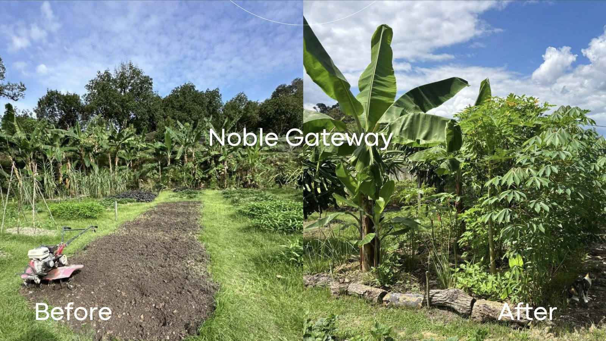
Noble Gateway demonstration plot, Hulu Langat.烏魯冷岳 Noble Gateway 示範區。
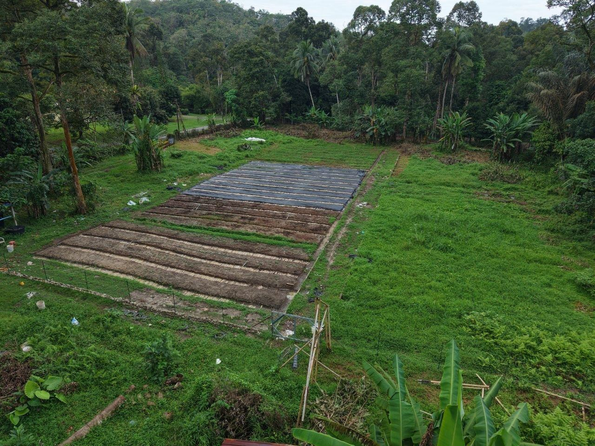
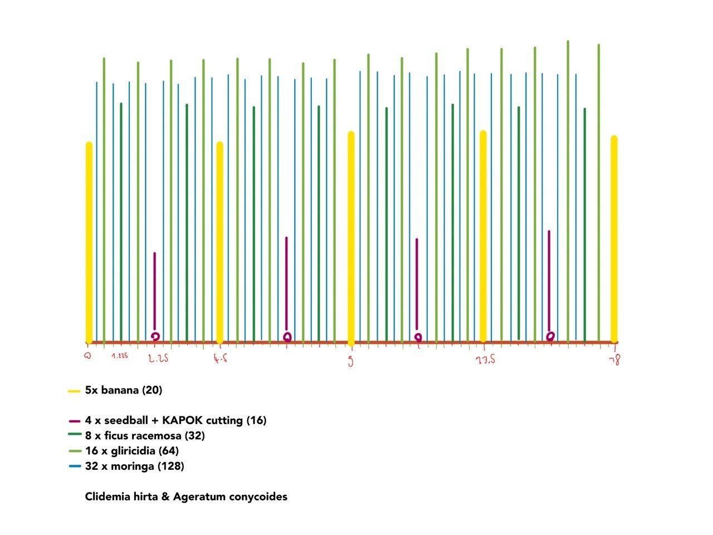
Kira Organic Farm: site and 18 m tree line design, October 2026.Kira 有機農場：基地現況與 18 公尺樹列設計，2026 年 10 月。
International國際
Malaysia: Noble Gateway and Kira Organic Farm馬來西亞：Noble Gateway 與 Kira 有機農場
At Noble Gateway in Hulu Langat, a syntropic demonstration plot was established in 2025, together with a three-day intensive design course adapted to tropical ecosystems. In 2026 the work continued with tree line designs for Kira Organic Farm.2025 年於烏魯冷岳的 Noble Gateway 建立趨合農業示範區，並開設依熱帶生態系統調整的三日密集設計課程。2026 年延續合作，為 Kira 有機農場設計樹列。
Place地點
Selangor, Malaysia馬來西亞 雪蘭莪
Period期間
2025 – present2025 年至今
Role角色
Design, courses設計、課程
Wenlin Village, Taipei台北 北投區文林里
A small park turned into a community food forest with native flowers, herbs and trees, within strict height rules. With village chief Michelle Lee. 2025 – present.在嚴格的樹高規範下，與文林里里長 Michelle Lee 合作，將小公園轉為社區食物森林，種植台灣原生花草與樹木。2025 年至今。
Bliss & Wisdom Ecological Park, Yunlin雲林縣私立福智高級中學
Multi-strata syntropic nest systems for education, soil health and biodiversity.多層次的趨合巢狀系統，用於教育並提升土壤健康與生物多樣性。
Syntropic agroforestry designs for farms, institutions, parks and rooftops, large and small, with priority on native Taiwanese species in high-density systems.為農場、機構、公園與屋頂提供大小規模的趨合農業設計，在高密度系統中優先採用台灣原生植物。
Soil assessment土壤評估
Microbiometer and microscope readings of soil biology, read together with laboratory soil chemistry, to set a baseline and measure change.以 Microbiometer 與顯微鏡檢測土壤生物，並搭配實驗室土壤化學分析，建立基準並追蹤變化。
Courses and workshops課程與工作坊
From a three-hour introduction to two- and five-day immersion courses with hands-on planting.從三小時的入門活動，到包含實際種植的兩日與五日沉浸式課程。
Biomass and ecosystem management生物量與生態系統管理
Pruning plans, planting calendars and on-site guidance that use the life cycles of species to build fertility and structure.提供修剪計畫、種植曆與現場指導，運用植物的生命週期累積肥力與結構。
Research研究
Measuring what happens in the soil量測土壤中的變化
Chili pepper (Capsicum annuum) trial at Gengfutian, 2025–2026: Tzu Chi University USR Center with the World Vegetable Center (WorldVeg) Plant Pathology team, soil DNA sequencing by Prof. Chen Jun-Yao (陳俊堯), Tzu Chi University, and soil chemistry by HDARES. Syntropic plots were not irrigated after 21 March 2026 and received no fertiliser or sprays.耕福田辣椒（Capsicum annuum）試驗，2025–2026：慈濟大學 USR 中心與世界蔬菜中心（WorldVeg）植物病理團隊合作，土壤 DNA 定序由慈濟大學陳俊堯教授執行，土壤化學分析由花蓮農改場完成。趨合試驗區自 2026 年 3 月 21 日後未再灌溉，全程未施肥、未噴藥。
5.3×chili harvest辣椒收成more than the monoculture control: 3.14 kg vs 0.60 kg, July–October 2026相較單一栽培對照區：3.14 公斤對 0.60 公斤，2026 年 7–10 月
0plants with Fusarium wilt株感染鐮孢菌萎凋病in syntropic soil inoculated with Fusarium (greenhouse)於接種鐮孢菌的趨合土壤中（溫室試驗）
3–5×Streptomyces in the soil土壤中的鏈黴菌a genus known for plant-protective strains (Prof. Chen)以保護植物的菌株聞名（陳教授）
Harvest per date, three plots of 10 plants each各採收日產量，每處理三區、每區 10 株
Syntropic趨合Monoculture control單一栽培對照
After August only the syntropic plots kept fruiting. 30 September includes 175.5 g weighed for two plots together.八月之後只有趨合區持續結果。9 月 30 日數值含兩區合併秤重的 175.5 公克。Show the harvest data as a table以表格顯示收成數據
Fresh fruit per harvest (g)每次採收鮮果重（公克）
Date日期
Syntropic趨合
Control對照
2026-07-09
672.4
179.7
2026-08-16
1,426.0
415.7
2026-09-30
312.8
0
2026-10-07
730.0
0
Total合計
3,141.2
595.4
Soil at the start, Gengfutian, September 2025 (topsoil)試驗開始時的土壤，耕福田，2025 年 9 月（表土）
Measure項目
Site 20242024 基地
Control對照
Tree line 1樹列一
Tree line 2樹列二
Organic matter (%)有機質（%）
1.8
1.9
15.1
10.6
Potassium (mg/kg)鉀（mg/kg）
~17
19
897
508
Magnesium (mg/kg)鎂（mg/kg）
~89
66
684
332
pH
7.4
8.2
7.7
7.8
Microbial biomass (µg/g)微生物量（µg/g）
—
120
232
Fungi : bacteria真菌：細菌
—
0.1 : 1
0.4 : 1
Chemistry: HDARES report S1140692. Biology: Microbiometer, 9 September 2025. The 2024 site values come from an earlier test made for another purpose.化學：花蓮農改場報告 S1140692。生物：Microbiometer，2025 年 9 月 9 日。2024 年基地數值來自另一用途的早期檢測。
WorldVeg soil analysis, 2026世界蔬菜中心土壤分析，2026 年
Measure項目
Syntropic, Hualien趨合，花蓮
Monoculture, Hualien單一栽培，花蓮
Monoculture, Tainan單一栽培，台南
Microbial biomass (µg/g)微生物量（µg/g）
1,637
213
236
Fungi : bacteria真菌：細菌
3.8 : 1
0.2 : 1
0.4 : 1
Organic carbon (%)有機碳（%）
29
1.8
0.86
Potassium (ppm)鉀（ppm）
2,424
482
80
pH
7.5
8.1
7.2
Microbial isolates分離菌株數
84
—
46
About 80% of the best biocontrol candidates against Fusarium came from the syntropic soil; 22 strains were deposited in the WorldVeg microbial bank.對抗鐮孢菌的最佳生物防治候選菌株中，約 80% 來自趨合土壤；共 22 株已存入世界蔬菜中心微生物庫。
Soil bacteria, 5 cm depth土壤細菌，深度 5 公分
Relative abundance (%) in DNA sequencing by Prof. Chen Jun-Yao, April 2026. Mean of four syntropic positions against the soursop control.陳俊堯教授 DNA 定序之相對豐度（%），2026 年 4 月。四個趨合採樣點的平均值，對照為刺果番荔枝單一栽培。
Syntropic趨合Control對照
Streptomyces1.4 %0.5 %
Pir4 (Planctomycetota)2.2 %0.5 %
Hyphomicrobium1.3 %0.4 %
Ilumatobacter1.3 %0.2 %
Gaiella1.9 %5.4 %
Syntropic soil held more Streptomyces and other actinobacteria and planctomycetes. The control was dominated by Gaiella, typical of low-carbon soils.趨合土壤含有較多鏈黴菌及其他放線菌與浮霉菌；對照土壤則以低碳土壤常見的 Gaiella 為主。
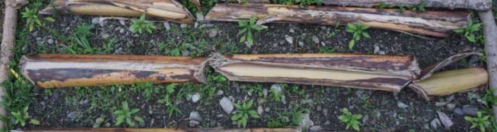
Control bed對照區Syntropic bed趨合區
Greenhouse test at WorldVeg: syntropic soil with Fusarium (left) and without (right). No plant wilted; the inoculated plants grew larger.世界蔬菜中心溫室試驗：含鐮孢菌（左）與不含（右）的趨合土壤。皆未萎凋，接種組的植株反而更大。
Life above ground地面上的生命
Fungi, insects and pollinators came back to Gengfutian with the biomass. At four weeks the syntropic chili plots had spiders, bees and grasshoppers; the control had one spider.隨著生物量增加，真菌、昆蟲與授粉者回到耕福田。移植四週後，趨合辣椒區可見蜘蛛、蜜蜂與蚱蜢；對照區僅見一隻蜘蛛。
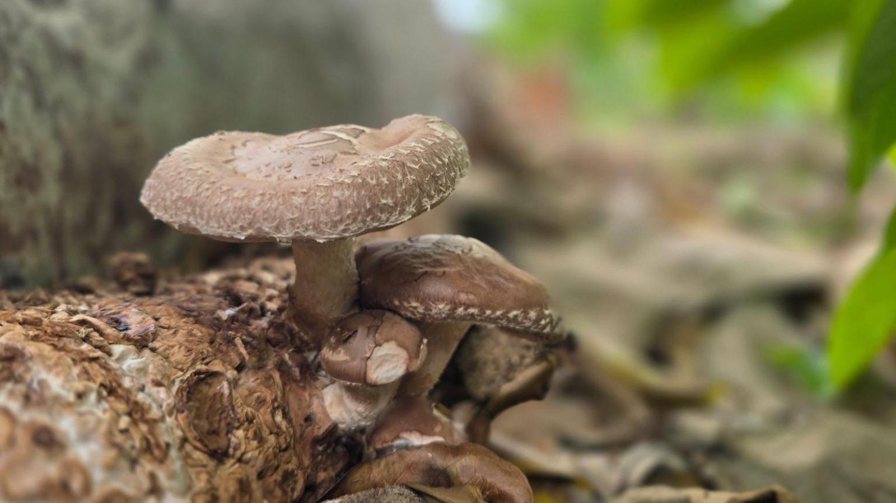
Fungi on wood mulch木質覆蓋物上的真菌
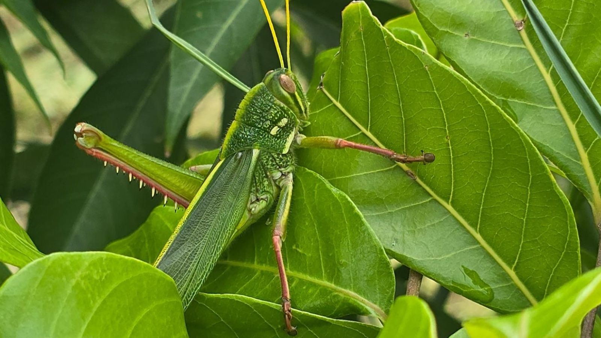
Grasshopper in the canopy樹冠層中的蚱蜢Pollinators and birds授粉者與鳥類
Manuscript in preparation: Henzler, I., Chen, T. and Maxwell, L., WorldVeg and Tzu Chi University. With three plots per treatment, the harvest difference is a strong trend that is not yet statistically conclusive (p ≈ 0.05–0.15).論文撰寫中：Henzler, I.、Chen, T.、Maxwell, L.，世界蔬菜中心與慈濟大學。每處理僅三區，收成差異為明顯趨勢，尚未達統計上的定論（p ≈ 0.05–0.15）。
Recognition and press獲獎與報導
2026 Vision USR Award2026 遠見 USR 生態共好組 績優獎Eco-mutual benefit category, for the Tzu Chi University USR team. Responsible for the food forest work.以慈濟大學 USR 團隊成員身分獲獎，負責食物森林相關工作。
Farmers, students, communities and government staff learn the method on real sites, then take it home to their own land.農民、學生、社區與公部門人員在實際場域學習方法，再將其帶回自己的土地。
BioComplete™ CompostingBioComplete™ 堆肥Biological compost and soil food web生物堆肥與土壤食物網
Talks演講
Ministry of Agriculture農業部Soil health, multi-strata configuration, biomass cropping土壤健康、多層次配置、生物量作物
National Taiwan University國立臺灣大學9th International Conference on Sustainable Future through Circular Economy第九屆循環經濟永續未來國際研討會
National Dong Hwa University國立東華大學International Symposium on Inter-Island Sustainability國際島嶼永續發展研討會
University of Nottingham Malaysia馬來西亞諾丁漢大學An Introduction to Syntropic Agroforestry, 2025趨合農業導論，2025 年
Publication出版
Syntropic Agroforestry: A Visual Guide for Taiwan趨合農業：台灣圖解指南
A bilingual illustrated guide with practical instructions for agroecology in Taiwan, including a glossary of terms. To be published soon.中英雙語圖解指南，提供適用於台灣農業生態的實作說明，並附術語表。即將出版。
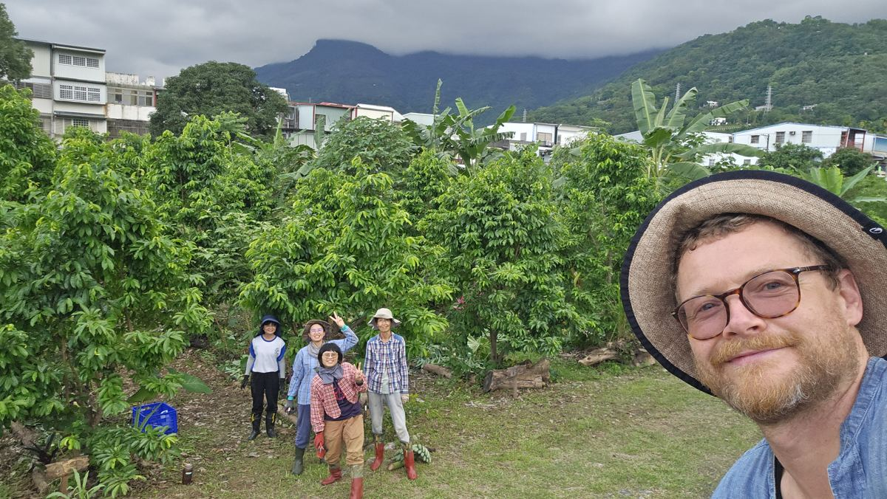
Founder創辦人
Tobias Chen陳拓彼 Tobias Chen
Soil health and regenerative agriculture specialist with over eleven years of practice in Costa Rica, the United States, Greece, Germany, Taiwan and Malaysia. He designs and manages the syntropic sites of the Tzu Chi University USR Center in Hualien and founded Studio Syntropy in 2026.土壤健康與再生農業專家，在哥斯大黎加、美國、希臘、德國、台灣與馬來西亞累積逾十一年實務經驗。目前負責慈濟大學 USR 中心各趨合農業場域的設計與管理，並於 2026 年創立趨合工作室。
11+years of practice in soil health and regenerative agriculture, in six countries年土壤健康與再生農業實務經驗，遍及六個國家
5.3×more chili harvest than the monoculture control, Gengfutian 2026倍辣椒收成：趨合區相較於單一栽培對照區（耕福田，2026）
10,000+ m²of syntropic systems implemented in Taiwan and Malaysia在台灣與馬來西亞完成施作的趨合系統面積
2026Vision USR Award, with Tzu Chi University與慈濟大學共同獲得遠見 USR 獎
2026Plant Health Pyramid; Redox potential and pH (Regen Ag Academy)植物健康金字塔；氧化還原電位與 pH（Regen Ag Academy）
2024, 2026Syntropic agroforestry training with Namaste Messerschmidt (Brazil) and Scott Gallant隨 Namaste Messerschmidt（巴西）與 Scott Gallant 進修趨合農業
2021Soil Food Web School, Foundation and Lab Tech; Permaculture Design CourseSoil Food Web School 基礎與實驗室技術認證；樸門設計課程
2021–2024Soil health consultant, Auenhof Pabstthum, Germany德國 Auenhof Pabstthum 土壤健康顧問